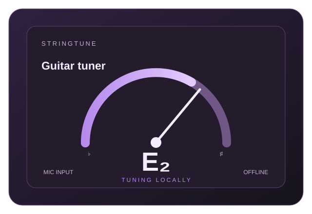

Procesamiento local
La señal del micrófono se analiza en el dispositivo para estimar la afinación. El audio no se envía a servidores.
ANDROID · AUDIO Y UTILIDADES
Un afinador para instrumentos de cuerda, gratuito y sin conexión a internet. El audio se procesa en el propio dispositivo, sin cuentas, anuncios ni compras dentro de la aplicación.

MOCKUP ILUSTRATIVO · INTERFAZ EN EVOLUCIÓNSOBRE EL PROYECTO
StringTune está pensado para ofrecer una referencia visual de afinación sin depender de una cuenta o de una conexión a internet. La aplicación escucha la señal del micrófono y calcula la frecuencia en el propio dispositivo. La precisión puede variar según el micrófono, el ruido ambiental, el instrumento y la técnica de ejecución.
La señal del micrófono se analiza en el dispositivo para estimar la afinación. El audio no se envía a servidores.
No requiere registro, no incorpora publicidad ni ofrece compras dentro de la aplicación.
La lectura de frecuencia ayuda a afinar, pero la persona usuaria debe verificar la tensión y las especificaciones de su instrumento.
INFORMACIÓN Y CONDICIONES
Consulta la documentación específica de esta aplicación. Las condiciones y la política de privacidad deben leerse junto con la información de la ficha de Google Play.